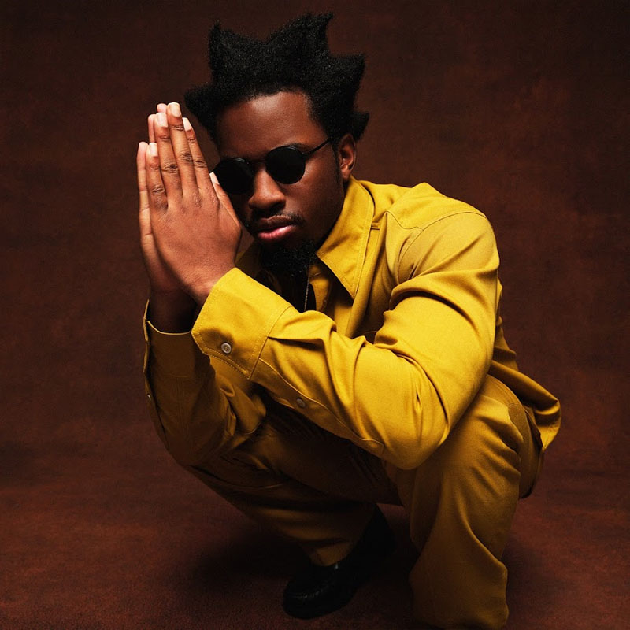

Denzel Curry
Denzel Curry, volledige naam Denzel Rae Don Curry, is geboren in Carol City, Verenigde Staten. Hij is nu 28 jaar oud. Opgroeiend in een van de buitenwijken van Miami was Denzel als jong kind al begonnen met het schrijven van poezie. Rond zijn 12e begon hij met rappen. In Carol City High was Denzel aan het afstuderen. Maar daar werkte ook al aan zijn eerste album Nostalgic 64.
Denzel Curry is weer een speciale rapper. Hij was als jong kind beinvloed door artiesten als Kanye West en Jay-Z. Maar zijn sound maakte een overwachte verandering mee, waarin hij al zijn woede eruit liep. En hier is hij ook bekend van geworden. Albums zoals Imperial en Ta3oo zijn echte stempels van de indruk die Denzel geeft. Maar dit is juist het cool aan Denzel Curry, hij is super veelzijdig. Je kijkt altijd uit naar zijn nieuwe album, want je weet nooit wat het kan worden.